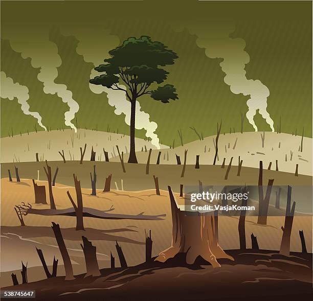
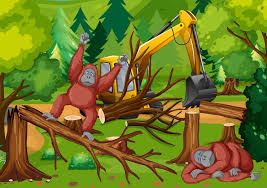

La reforestación consiste en plantar árboles en áreas deforestadas, mientras que la restauración busca recuperar la funcionalidad de los ecosistemas degradados.
- Recuperar la biodiversidad: Restablecer hábitats para especies nativas.
- Mejorar la calidad del aire y agua: Los árboles filtran contaminantes y regulan el ciclo hidrológico.
- Mitigar el cambio climático: Aumentar la captura de carbono atmosférico.
